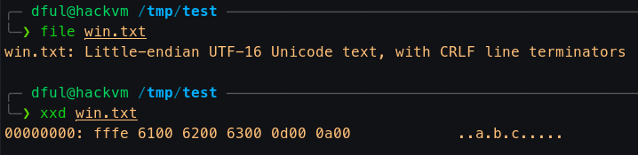
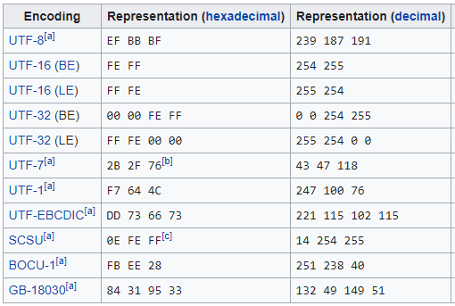
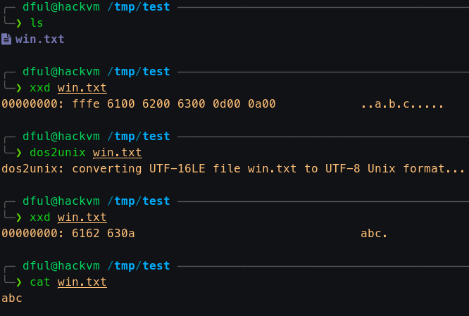
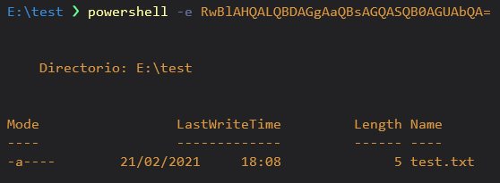

File Transfer in Windows
Tricks and tool to transfer files from a compromised Windows
Pre: File formats
First of all it is important to note the difference of encoding text files in Windows and Linux. The difference is key when reading on linux text files created on a Windows Machine.
Analyzing a text file from Windows
-
Windows uses UTF-16 LE Encoding for its text files. We can check this doing the following:
-
Imagine we have transfered a file from Windows with the 'abc' text, for example
copy .\test.txt \\192.168.1.X\test\win.txt -
We analyze this file in a Linux box 
-
As we can see, its
hexrepresentation isfffe 6100 6200 6300 0d00 0a00-
fffeTells us that is using UTF-16 Little Endian, it is a BOM (Byte Order Mark)From wikipedia:

-
So the rest are the following expressed in UTF-16 LE:
6100> Unicode char 61 (a)6200> Unicode char 62 (b)6300> Unicode char 63 (c)0d00 0a00> Unicode chars0d0a, line termination (Ascii control characters\r\n)
-
-
-
Therefore, if we need to work with these files in a Linux environment, we can use the
dos2unixtool to convert them. Simple demo:
Using Windows format to encode a Powershell command
It is not directly related with file transfers, but to demonstrate a useful utility of how Windows handles their file format with Powershell a simple demo is shown below:
-
Powershell can execute a base64 command with its
-EncodedCommandflagInfo
This command must be encoded precisely with the encoding format shown above, so it must be a Base 64 of a UTF-16 Little Endian encoded command.
-
To do this with a terminal, we just have to do the following:
- Prepare the command without the line ending, for example
Get-ChildItem
1echo -n 'Get-ChildItem'- We pipe this to a
iconvto encode in the Powershell format
1echo -n 'Get-ChildItem' | iconv -t UTF-16LEInfo
We can see the result of the conversion piping it to
xxd1 2 3
╰─❯ echo -n 'Get-ChildItem' | iconv -t UTF-16LE | xxd 00000000: 4700 6500 7400 2d00 4300 6800 6900 6c00 G.e.t.-.C.h.i.l. 00000010: 6400 4900 7400 6500 6d00 d.I.t.e.m.- Now we convert this to base64 without wrapping lines.
1 2
╰─❯ echo -n 'Get-ChildItem' | iconv -t UTF-16LE | base64 -w 0 RwBlAHQALQBDAGgAaQBsAGQASQB0AGUAbQA=- Finally we test the resulting commmand.

- Prepare the command without the line ending, for example